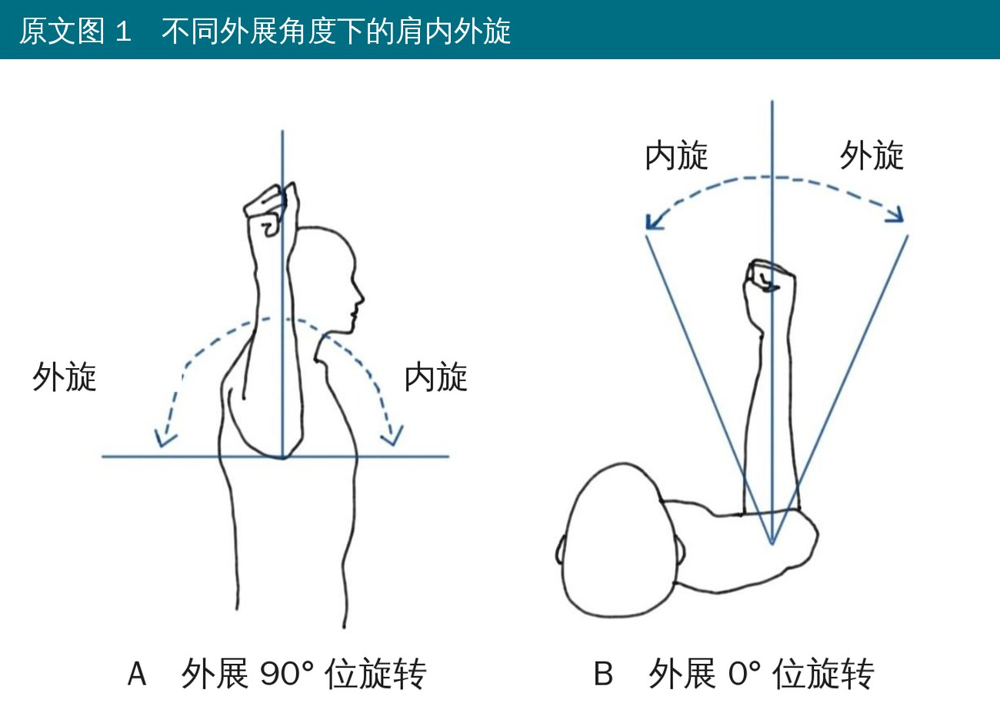
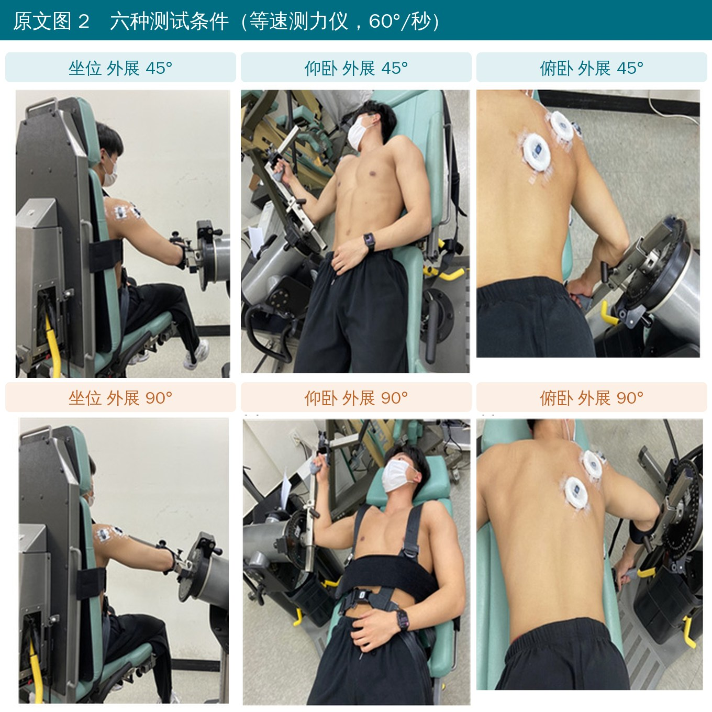
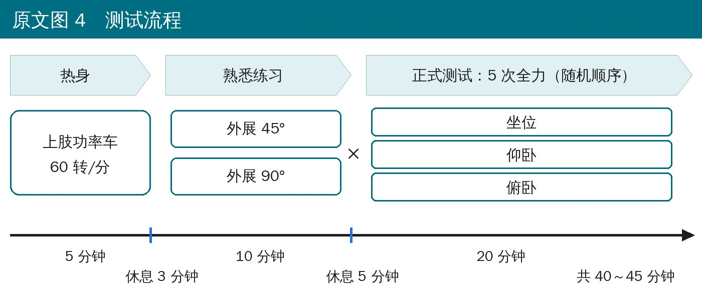
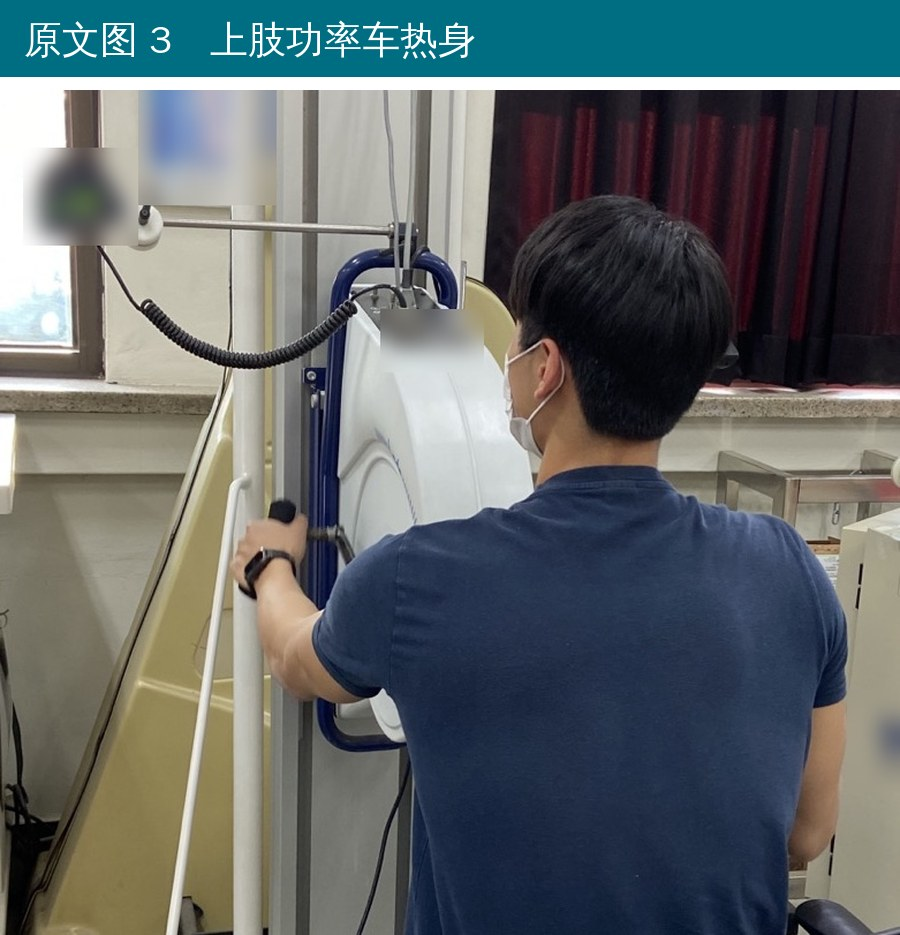
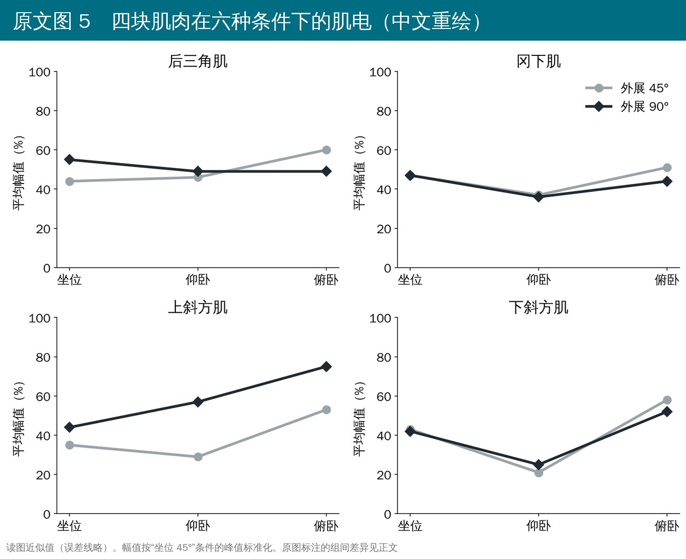
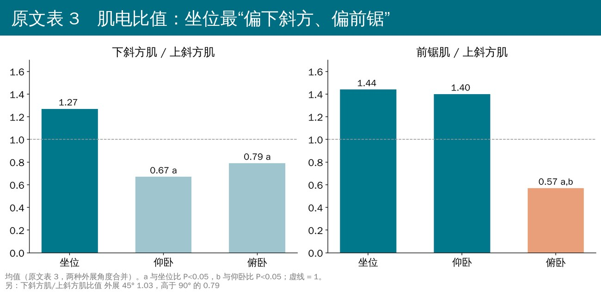
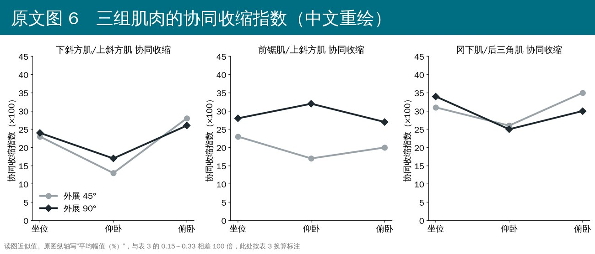
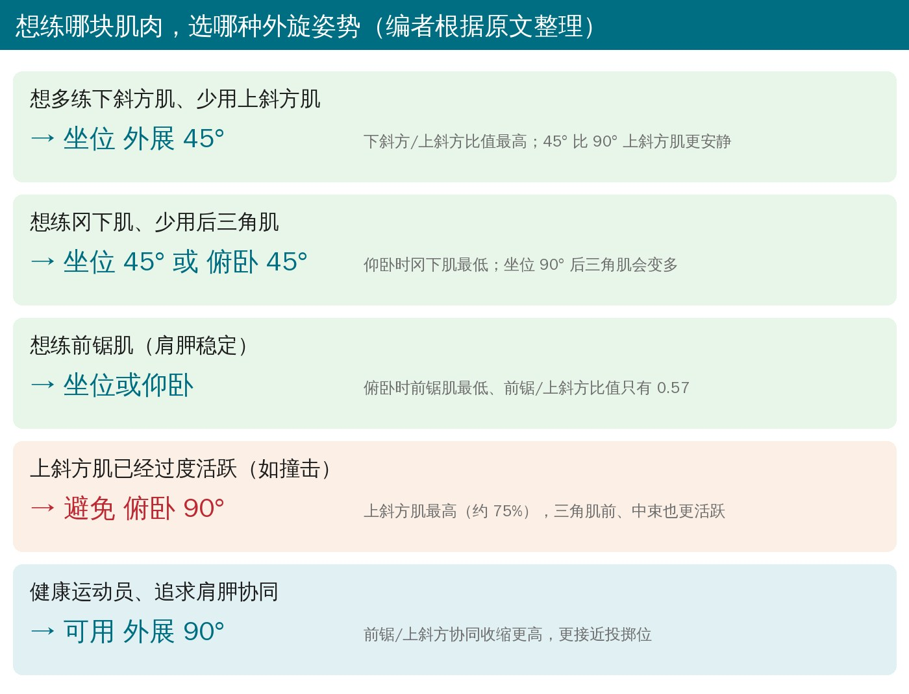

🔖原文信息（编者中文重排）
📚 文献信息
▪ Sung J-H, Jung W, Wang J, Kim J-H. The Effects of Body Positions and Abduction Angles on Shoulder Muscle Activity Patterns during External Rotation Exercises. Healthcare. 2023;11(14):1977.
▪ 作者来自韩国庆熙大学体育研究生院、运动医学系
▪ 实验室重复测量研究；DOI：10.3390/healthcare11141977
肩外旋几乎是每个肩康复方案的必练动作。但同样是外旋，坐着、仰躺、趴着做，手臂外展 45° 还是 90°，肩胛周围的肌肉分工完全不一样。
肩撞击、肩胛运动障碍的人常见的问题是上斜方肌太积极、下斜方肌和前锯肌不够用，三角肌太多又会把肱骨头往上顶。所以理想的外旋练习是：想练的肌肉多出力，不想要的肌肉少掺和。
先说结论：坐位、外展 45°最“干净”——下斜方/上斜方比值最高，三角肌前中束最安静；俯卧，尤其俯卧 90°上斜方肌最活跃、前锯肌最低，肩胛控制差的人慎用。

🔖原文图 1 外展 90° 与 0° 位的内外旋
• 对象：23 名健康年轻男性，平均 22.3 岁，无肩痛
• 设备：等速测力仪（Cybex Humac Norm），角速度 60°/秒，从内旋 30° 到外旋 90°（共 120°），每个条件做 5 次全力外旋
• 6 个条件：坐位 / 仰卧 / 俯卧 × 外展 45° / 90°，随机顺序，每个条件之间至少休息 2 分钟
• 坐位有靠背、躯干用魔术贴固定；仰卧和俯卧调节座椅让肩峰锁骨关节对准测力仪轴心
• 表面肌电：上斜方肌、下斜方肌、前锯肌、冈下肌、三角肌前束、中束、后束共 7 块；幅值以“坐位 45°”条件的峰值为基准做标准化
• 另外算了三组比值和协同收缩指数：下斜方/上斜方、前锯/上斜方、冈下/后三角

🔖原文图 2 六种测试条件

🔖原文图 4 测试流程

🔖原文图 3 热身（编者已模糊背景文字）

🔖原文图 5 四块肌肉的肌电（中文重绘，读图近似值）
• 上斜方肌：俯卧最高（俯卧 90° 约 75%），并且 90° 明显高于 45°
• 下斜方肌：坐位明显高于仰卧（约 42% vs 23%）
• 所以下斜方/上斜方比值：坐位 1.27，仰卧 0.67，俯卧 0.79；外展 45° 也比 90° 高（1.03 vs 0.79）
• 前锯肌坐位最高（53%），俯卧最低（33%）；外展 90° 比 45° 高
• 前锯/上斜方比值：坐位 1.44、仰卧 1.40，俯卧只有 0.57
• 冈下肌：坐位和俯卧（约 47%～48%）都高于仰卧（37%）；只有俯卧时 45° 比 90° 更高
• 三角肌前束、中束：坐位最低，俯卧最高（前束 28% vs 52%，中束 49% vs 79%）
• 三角肌后束：坐位时 90° 比 45° 多；俯卧时反过来

🔖原文表 3 肌电比值

🔖原文图 6 协同收缩指数（中文重绘，读图近似值）
• 下斜方/上斜方、冈下/后三角的协同收缩：坐位和俯卧都高于仰卧
• 前锯/上斜方协同收缩：外展 90° 在三种体位都高于 45°
• 作者提醒：协同收缩高不一定是好事，什么值算“好”还没有标准

🔖按目标选择外旋姿势
• 肩痛、撞击、肩胛控制差的早期：首选坐位外展 45°，上斜方肌和三角肌前中束都最少，下斜方比例最高
• 想加强前锯肌：用坐位或仰卧，不要用俯卧
• 想单独练冈下肌、少用后三角肌：外展角度低一点（45°）更好，坐位尤其不要上到 90°
• 俯卧外旋（尤其 90°）上斜方肌和三角肌前中束最活跃，适合放在后期，或者上斜方本来就不亢进的人
• 健康运动员：外展 90° 前锯/上斜方协同收缩更高、更接近投掷位，可作为功能性进阶
• 本研究用的是等速测力仪全力外旋，换成弹力带或哑铃时，原则可以借鉴，但具体数值不能直接套用
• 只有 23 名健康年轻男性，没有肩痛患者；结论是“推测对患者有利”，没有实际验证
• 只测了表层肌肉，冈上肌、小圆肌、肩胛下肌不知道
• 肌电是“出力多少”的间接指标，不等于练了之后力量真的会变化
• 每个条件只做了 5 次，作者也承认次数偏少
原文里对不上的地方：
• 摘要说记录了“7 块肌肉”，只列出 5 个名字（上斜方、下斜方、前锯、冈下、三角肌）
• 标准化方法：方法里写以“坐位 45° 条件的峰值”为基准，图 5、图 6 的图注却写“最大自主收缩百分比”
• 表 2 的均值是百分数（如 28），标准差却写成小数（如 0.14），量纲不统一；图 6 纵轴写“平均幅值（%）”，数值约 13～35，表 3 同样指标是 0.15～0.33
• 下斜方肌俯卧（55%）明显高于坐位（42%），表中却未标显著，标准差 0.95 是均值的近 2 倍（按小数量纲），数据离散很大
• 讨论里说测的是“等张收缩”，实际用的是等速测力仪（等速收缩）
• 结论说“外展 45° 更有利于恢复前锯肌功能”，但结果是前锯肌在 90° 时更高（51% vs 37%），推论和数据方向相反
• 讨论里“上斜方肌过高 → 肩不稳的人避免俯卧外旋”，上斜方亢进通常关联的是撞击，而不是不稳
• 图 1 的标题写 A 为“外展 90°”、B 为“0°”，但研究实际比较的是 45° 和 90°；正文还有“LT/UC”“pone lying”等笔误
原文表 1 表面肌电电极位置
| 肌肉 | 电极位置 |
|---|---|
| 上斜方肌 | 肩峰与第 7 颈椎棘突连线的中点 |
| 下斜方肌 | 肩胛冈内侧端（三角区）与第 8 胸椎连线的 2/3 处 |
| 冈下肌 | 冈下窝中央 |
| 三角肌前束 | 肩峰远端、前方一指宽处 |
| 三角肌中束 | 肩峰到肱骨外上髁连线上肌腹最隆起处 |
| 三角肌后束 | 肩峰后角下方 2 cm |
| 前锯肌 | 腋前线第 7 肋表面 |
原文表 2 各条件下的标准化肌电幅值（%，均值（标准差））
| 肌肉 | 坐位 | 仰卧 | 俯卧 | 45° | 90° | 体位 P | 角度 P | 交互 P |
|---|---|---|---|---|---|---|---|---|
| 三角肌前束 | 28（0.14） | 35（0.23） | 52 a（0.53） | 36（0.31） | 41（0.39） | 0.009 | 0.36 | 0.58 |
| 三角肌中束 | 49（0.21） | 61 a（0.19） | 79 a（0.7） | 58（0.39） | 68（0.5） | 0.013 | 0.11 | 0.42 |
| 三角肌后束 | 50（0.14） | 48（0.19） | 55（0.29） | 50（0.24） | 51（0.19） | 0.31 | 0.58 | 0.002 |
| 冈下肌 | 47 b（0.1） | 37（0.1） | 48 b（0.15） | 45（0.14） | 43（0.12） | <0.001 | 0.11 | 0.03 |
| 上斜方肌 | 39（0.17） | 43（0.23） | 64 a,b（0.29） | 39 *（0.21） | 58（0.26） | <0.001 | <0.001 | 0.01 |
| 下斜方肌 | 42（0.09） | 23（0.12） | 55（0.95） | 41（0.62） | 39（0.52） | 0.15 | 0.56 | 0.03 |
| 前锯肌 | 53（0.45） | 46（0.38） | 33 a（0.17） | 37 *（0.3） | 51（0.4） | 0.005 | <0.001 | 0.57 |
a 与坐位比 P<0.05；b 与仰卧比 P<0.05；* 与 90° 比 P<0.05。标准差写法照录原文。
原文表 3 肌电比值与协同收缩指数（均值（标准差））
| 指标 | 坐位 | 仰卧 | 俯卧 | 45° | 90° | 体位 P | 角度 P | 交互 P |
|---|---|---|---|---|---|---|---|---|
| 下斜方/上斜方 比值 | 1.27（0.56） | 0.67 a（0.48） | 0.79 a（0.73） | 1.03 *（0.59） | 0.79（0.68） | <0.001 | <0.001 | 0.31 |
| 前锯/上斜方 比值 | 1.44（0.84） | 1.4（1.84） | 0.57 a,b（0.29） | 1.21（1.55） | 1.05（0.83） | <0.001 | 0.34 | 0.09 |
| 冈下/后三角 比值 | 1.01（0.35） | 0.86（0.34） | 0.97（0.33） | 0.97（0.32） | 0.92（0.36） | 0.13 | 0.1 | 0.06 |
| 下斜方/上斜方 协同收缩 | 0.24 b（0.07） | 0.15（0.08） | 0.27 b（0.15） | 0.21（0.12） | 0.22（0.12） | <0.001 | 0.32 | 0.006 |
| 前锯/上斜方 协同收缩 | 0.26（0.1） | 0.25（0.13） | 0.23（0.13） | 0.2 *（0.09） | 0.29（0.13） | 0.5 | <0.001 | 0.003 |
| 冈下/后三角 协同收缩 | 0.32 b（0.07） | 0.26（0.07） | 0.33 b（0.1） | 0.31（0.09） | 0.3（0.08） | <0.001 | 0.21 | <0.001 |
欢迎关注悦美力公众号，获取更多物理治疗的专业知识！
📄参考文献：
Sung J-H, Jung W, Wang J, Kim J-H. The Effects of Body Positions and Abduction Angles on Shoulder Muscle Activity Patterns during External Rotation Exercises. Healthcare. 2023;11(14):1977. doi:10.3390/healthcare11141977
原文以 CC BY 4.0 协议开放获取。本文为学术交流用的中文解读，照片引自原文图 2、图 3，线稿引自图 1 并替换为中文标注，流程图与结果图为编者中文重绘，表格为编者翻译。